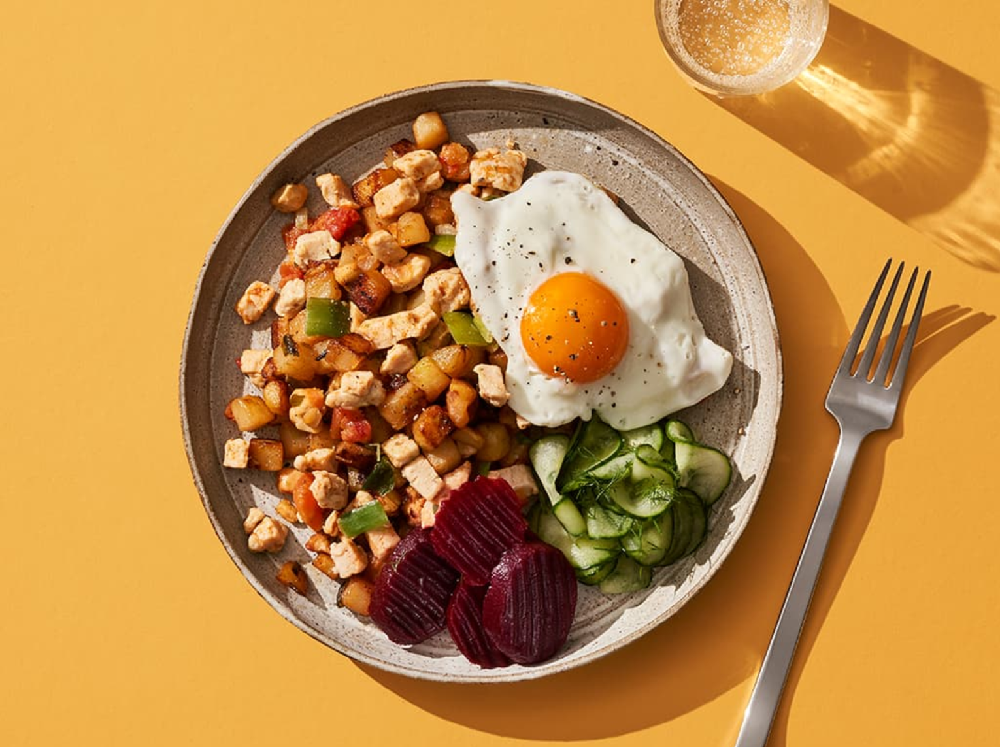

Original receptet
Information
Pyttipanna är bra krog- och bakfyllemat och utmärkt när man vill städa ur kylskåpet. Recept behövs egentligen inte,
det är tillgången som avgör vilka ingredienser det blir.
En bit rökt korv eller fläsk gör det hela extra gott.
Servera pyttipannan med inlagda rödbetor och stekt ägg”sunny side up”. Man kan också gräddstuva pytten och lägga en
äggula på toppen.
What you need
- 800g kokt potatis [8-10 st]
- 2 gula lökar
- 150g rökt fläsk
- 150g skinka
- 150g korv
- 3-4 msk smör, till stekning
- salt
- peppar, nymalen
- 3dl vispgrädde, till stuvning
- 1krm mejram, till stuvning
Till servering
Steg
- Tärna potatisen, löken, köttet och korven och stek bitarna i smör i en stor stekpanna. Stek i omgångar om du bara har en liten panna. Smaka av med salt och peppar.
- Vill du gräddstuva pytten lägger du över den i en kastrull, tillsätter grädde och låter alltsammans koka upp. Smaka av med salt, peppar och mejram.
- Servera med stekt ägg eller äggula samt inlagda rödbetor.
Tillbaka till hemsidan Click here!